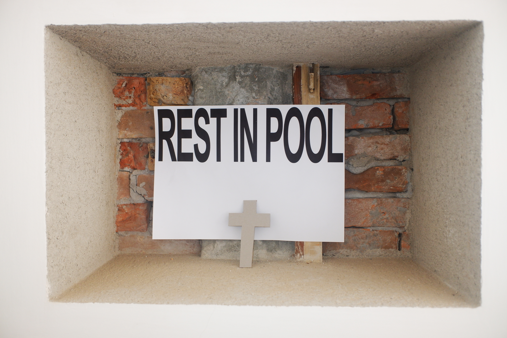

Behance
Amelie Schaeberle is a Visual Artist researching in the field of Visual Culture. In her practice, she questions our relationship with images as a source of information in the post-photographic era.
She has studied at the Zürich University of the Arts, Free University of Bolzano and the ISIA Urbino. Her work has been exhibited at the Turin Graphic Days, at Spazio Alelaie in Bari, the Weight Station and the Casa Goethe Haus in Bolzano, Italy as well as in the Toni Areal in Zürich, Switzerland.
Selected projects have been published in BranD (Issue 73), Süddeutsche Zeitung Magazin, Stein (08/23), and on the Dezeen blog.